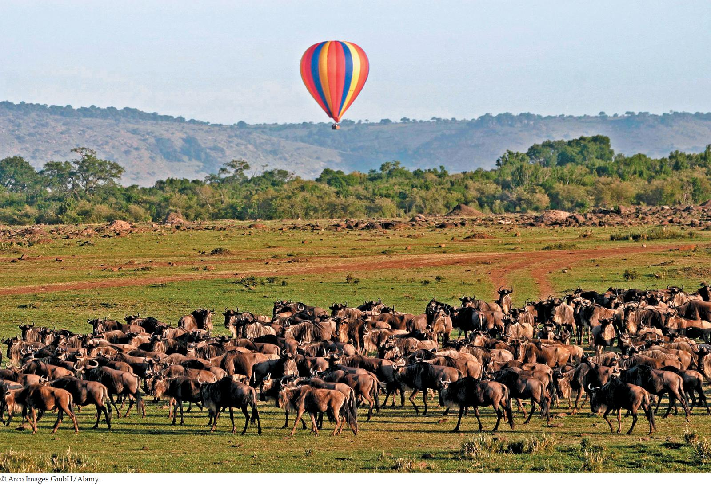

| 30 | Nutrition, Feeding, and Digestion |
|
KEY CONCEPTS
30.1Food Provides Energy and Chemical Building Blocks 30.2Animals Get Food in Three Major Ways 30.3The Digestive System Plays a Key Role in Determining the Nutritional Value of Foods 30.4The Vertebrate Digestive System Is a Tubular Gut with Accessory Glands 30.5The Processing of Meals Is Regulated |

Herds of wildebeest move across a savanna in Kenya during the Serengeti migration.
|
Let’s to travel in a hot-air balloon over imagine we are lucky enough the savannas of East Africa. Most of the animals below us will ignore the steady rushing sound of our hot-air burner. Thus as we float in a gentle breeze less than 100 feet above them, we will be able to observe their ordinary daily lives.
Textbooks tell us that Earth is dynamic. Let’s use the wonders of human imagination to look at the scene below us dynamically. Let’s pretend that we can see energy and matter traveling from place to place.
Light that has traveled 93,000,000 miles through cosmic space from the sun steadily strikes the grasses and thinly scattered trees. Through photosynthesis, these plants convert a small percentage of the light energy into chemical energy in the bonds of organic molecules they manufacture. The remainder of the sunlight energy—more than 99 percent of it—turns to heat as it strikes the savanna. As the plants synthesize the organic molecules of their bodies, they extract CO2 from the air to provide the carbon atoms they need. Some plants—but not many—can even take nitrogen from the air to build their proteins.
The zebras, wildebeests, and other herbivores below us need the tissues of plants to sustain their lives because they depend on organic compounds for the energy and atoms they require. Dynamically, as the grasses and trees grow and make new organic matter, the animals eat a portion of the organic matter. Some of the organic compounds in the plants are particularly valuable because—while the animals require them—they can be difficult for the animals to obtain in adequate amounts. Proteins are often in this category.
We’ll see many herbivores below us. The flux of energy from the sun into the plants is great enough for many herbivores to survive by exploiting it.
Only rarely, however, will we see a lion, cheetah, or hyena eat one of the herbivores. Organisms cannot live on heat. Yet the plants turn some of their chemical energy into heat, and the herbivores turn some to heat as well. Thus by the time the plants and herbivores have used the chemical energy from photosynthesis, only a small percentage of it is left. Only a few carnivores can get enough chemical energy to exist, so carnivore populations are smaller than herbivore populations.
In the midst of all these dynamic fluxes, each animal below us must somehow meet its needs for both energy and chemical substances. The study of how animals meet this challenge is the study of nutrition.
What are some of the specific types of organic molecules that animals must obtain in their foods, and why do they need them?